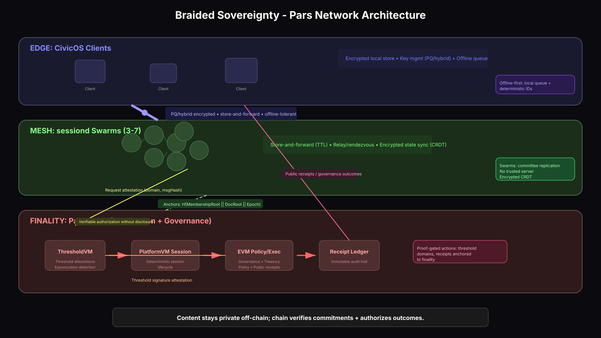

Private coordination, public legitimacy.

Edge ↔ Mesh
PQ/hybrid encrypted, store-and-forward, offline tolerant.
This flow never touches Finality.
Mesh → Finality
Merkle roots: membership/doc/ops (periodic)
H(MembershipRoot || DocRoot || Epoch)
Mesh → ThresholdVM → EVM
ThresholdSign(domain, msgHash)
Verifiable authorization without disclosure
EVM → Edge
Public receipts, audit trails, governance outcomes returned to clients.
Content stays private off-chain; chain verifies commitments + authorizes outcomes.
| Property | Mechanism |
|---|---|
| Censorship-resilient | Distributed routing + store/forward + no single point |
| Intermittent-connectivity tolerant | Queue + retry + TTL |
| Privacy-preserving | E2E encryption + minimal metadata |
| Verifiable governance | Attestations + receipts |